临时睡人的地方
页脚能读到一句：“低龄组暂移活动室，折叠床另记。”其余部分被水痕压住。
2007.8.18 停用
涉及儿童福利机构、暴雨事故、短暂哭泣与成年人工作失误；无血腥画面。
可用键盘完成全部操作；谜题没有倒计时。无音乐，所有关键信息均可直接阅读。
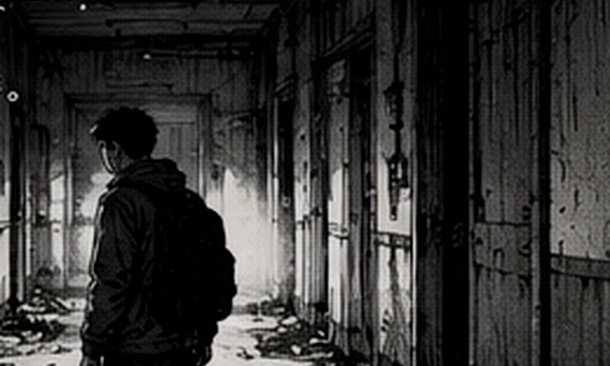
他们把第一只箱子挪过门槛时，雨势才猛地密起来；门厅玻璃很快蒙上一层白气，锁眼里那截发硬的胶带被水光照得发亮。林澈只试了一次钥匙便收回封口袋，顺手在清点页角落写下时间——20:08。
周野：“九点锁门，是吧？”
林澈：“物业说九点半，算上搬箱子，已经没剩多少时间……你手里那只别拖，底快散了。”
周野：“我都来给你搬箱子了，还嫌我拖？”
沈禾：“你俩先吵，窗边那两箱给我——底已经湿透一角。”
桌边三只旧纸箱挤在一起：A 箱贴着“学校接收”，B 箱留给维修和拆除队，C 箱的去向栏还是空的；潮气把箱盖熏得发软，边角一碰就往里卷，周野抱起最上面那只时还掉下一小片湿纸皮。
林澈咬着笔帽，把箱号、去向和经手人一格格补好；周野伸手想接本子，他下意识往回让了半寸。这个动作太熟，周野连手都没收，只挑了下眉——大学做社团展览时林澈就这样，谁动过哪一摞底片，他第二天都记得。
周野：“你现在连进门几点都要记？”
林澈：“省得回头又问我，是谁先碰过哪只箱子。”
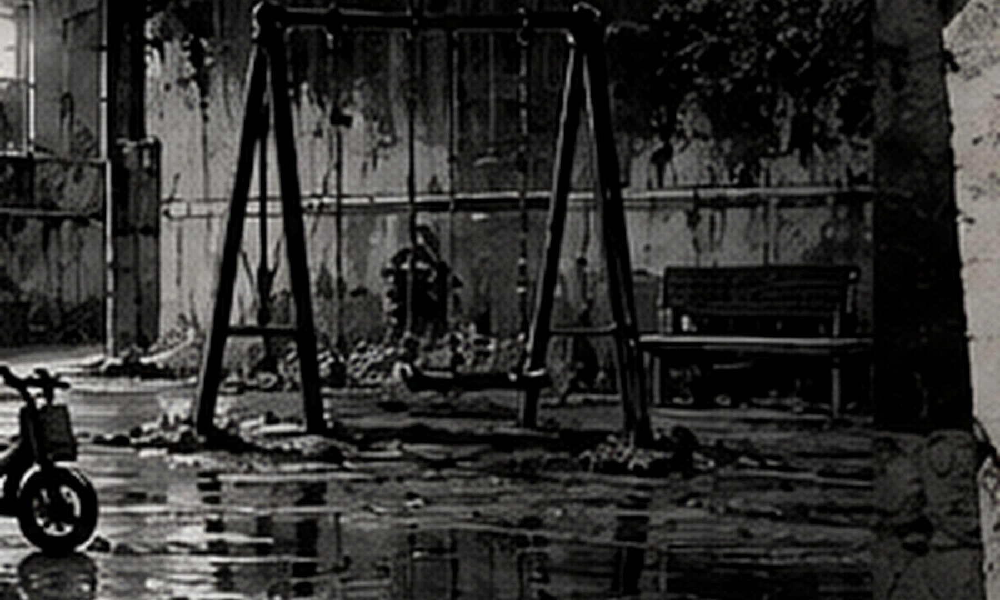
活动室比门厅高半级，墙脚那圈瓷砖早褪成发冷的灰蓝；窗帘不知什么时候被人拆走，只剩几枚挂钩吊在轨道上。沈禾蹲下摸了摸墙根，又把纸箱往屋心挪开一掌宽，手指离开墙面时带下一点潮湿的白灰。
沈禾：“这面墙还在返潮，纸箱离它远点……周野，你脚边那张凳子别踢。”
林澈低头核箱号，余光里靠窗那张折叠床忽然白得扎眼，像有人刚铺好床单，连金属床脚都泛着新亮；等他抬头看清，那里只有一层发硬的旧帆布，灰积得很厚，靠墙一角还塌下去一块。
他没立刻出声，只往窗边多走了两步；雨水沿玻璃往下淌，床还是那张床，除了帆布上被风吹出来的一道浅痕，什么都没有多出来。
周野：“你看什么？”
林澈：“刚才像有人把床铺好了……可能是窗外反光。”
柜顶还粘着几颗纸折的五角星，胶已经黄透，星角一律往下耷；沈禾认出其中一颗折的是旧作业纸，背面露出半道没擦干净的竖式，她没有去揭，只用指节碰了碰柜门，确认里面还有东西。
墙边挤着三张矮凳，其中一张凳腿缠过铁丝；周野鞋尖蹭过去，凳子晃得厉害，他赶紧用膝盖顶住，嘴里那句“对不起”差点脱口而出，又自己咽了回去。
周野：“这里以前是不是临时睡过人？”
沈禾：“像是，柜底还有借用簿……你别站那儿挡光。”
周野：“那拍下来？”
沈禾没接话，翻到借用簿中段时却停了一下；纸边擦过木板，簌地落下一层灰，底下还压着半张点名纸。
柜子底层还压着一本薄薄的借用簿，封皮画满铅笔印；周野翻到中间，发现记录的不是玩具，而是谁借走了蜡笔、剪刀、胶水——有几页会在名字后面多写一句：“别给她绿色，她会把整张纸涂满。”
周野：“这谁？”
林澈只抄簿子标题，没碰那句“别给她绿色”；周野把簿子塞回去时，底下那半张低龄组点名纸顺着木板滑了出来，纸角正好停在他鞋尖前。
靠窗那排折叠床没有再出现刚才那层“干净床单”；林澈没有拍第二张，沈禾却把那一眼记在自己的便笺边缘，只写了四个字：窗光误认。
桌面还粘着一页受潮纸，揭的时候几乎和木纹一起起皮；标题勉强能认出是临时床位调整，正文却只剩零散几处墨色浮在水渍边缘。
页脚能读到一句：“低龄组暂移活动室，折叠床另记。”其余部分被水痕压住。
铁柜门已经锈死一半，长桌却还稳；塑料布揭开以后，搪瓷盘、湿衣袋和针线领用簿挤在同一块桌面上，东西很多，却没有一样像后来帖子里写得那么“像仪式”。
服装室比活动室冷得明显，靠墙铁柜锈得几乎打不开，长桌倒还稳；周野把发脆的塑料布卷到一边，一只掉瓷的白搪瓷盘从下面露出来，盘沿粘着几根已经发黑的棉线。
盘里压着几块白布，字被水晕得七零八落：有的只剩一个姓，有的只剩最后一笔；布边却都很整齐地留着剪口。
白布签一共七块，大小并不整齐，剪口也不是同一种方向；唯一相同的是边缘都留着旧针脚，说明它们先从衣物上拆下来，之后还准备继续被使用。
周野：“网上那帖子说的就是这个？”
沈禾：“帖子那张只拍了布签。你看下面——湿衣袋还在。”
林澈没有给那几块布签下结论，只在便签上记了发现位置和时间；写到“内容”一栏时停了停，最后只落下“旧布签若干，来源待核”。
铁柜里还塞着没拆包装的捐赠衣，110 到 150 的尺码混成一摞。最上面那包印着早已停业的商场名；周野抽出一件往自己身上比了比，又嫌弃地塞回去。
周野：“这颜色当年也不好看。”
沈禾：“你来挑校服？”
桌脚旁的编织袋内壁结着一层泥，袋口用蓝色塑料绳随手打了两个结；袋子没有任何特殊标记，倒是边角夹着一张湿衣收拢表，纸边已经粘在纤维上。
林澈：“库存领用是十八点三十四，剪裁条十八点四十一……”
周野：“也就是说，衣服已经发下去了，才开始剪？”
林澈没马上回答，只把两张纸并到一起，指尖压住时间那一栏；周野凑过去看了一眼，没有再催。
长桌另一头有一本针线领用簿，页脚被剪掉一角；红线不是特殊物资，只是当年最耐拉的粗棉线；邹梅连续领过三个月，备注总是同一句：“缝厚布。”
沈禾把针线领用簿翻到三月，红线几乎每周都有人领；她又翻回事故当天，把那页压在桌角：“别把平时用的线和那晚的动作混一块，看当天这几张。”
周野：“那我把‘恐怖红线’四个字咽回去。”
沈禾：“你先咽着，等真有鬼了再起标题。”
布边已经发白，剪口里卡着一小段暗红缝线。桌下还有一只装湿衣的编织袋。
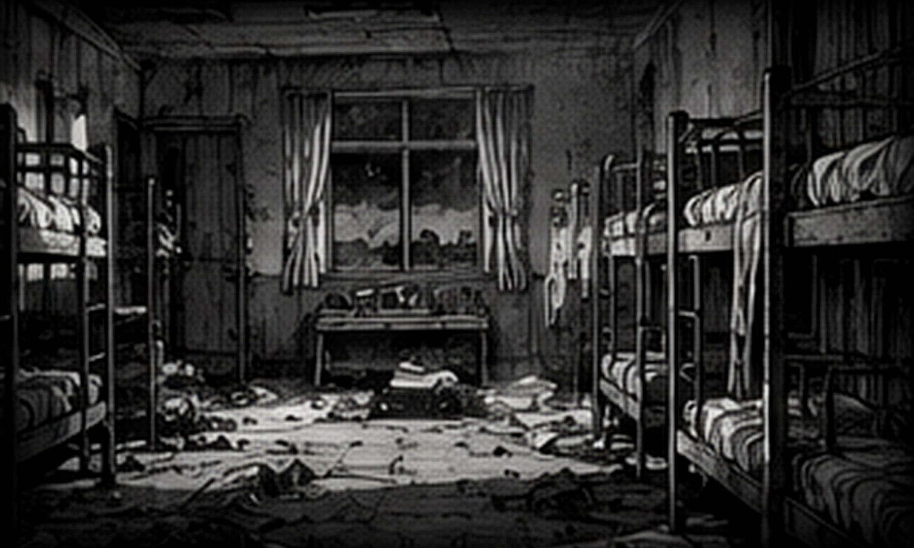
寝室门只开了一条缝，周野用肩膀顶了两次才挤进去；门后没有箱子，也没有什么故意挡门的东西，只是一块翘起的地胶死死卡在门脚。他低头看了两秒，像是觉得刚才那股戒备有点丢脸。
周野：“我刚才差点对一块地胶说‘借过’。”
林澈：“晚了，它不一定原谅你。”
靠窗第四张床没有床板，铁架上还挂着旧维修牌。沈禾念到日期时停了停，随手又从床头柜夹层抽出夜间照护页。
沈禾：“等一下，别按床号往下数——维修牌是当天上午，04床那时候已经停用。”
床头柜最下面压着一张值日表；乔乔负责收晾衣夹，阿成负责把喝水杯送去消毒，小满那一栏被人画了两次圈，旁边写“又忘”；周野看了半天。
周野：“我九岁的时候也不可能记得收夹子。”
林澈：“你二十八也记不得还车钥匙。”
窗台里侧有一道铅笔线，旁边只写着“成 132”；林澈没有抄进主表；沈禾说那大概只是量身高留下的。
靠墙床头的旧纸签上，一行名字被水泡开，下面却还能看到“活动室折叠床”几个字。周野盯了半天，还是问了出来：
周野：“床在这里，为什么人写活动室？”
林澈：“先找完整的调床页。”
床下还有一本晚间小事本：谁把牙刷掉进水池、谁半夜踢被子、谁第二天要带作业去学校；很多字潦草得像边走边写，其中一页提到小满“睡前又问 04 床什么时候修好，她嫌活动室有人打呼”。
周野：“所以她知道自己不睡这儿？”
沈禾：“至少这页写的时候知道。看日期——就是当天。”
林澈把小事本夹到维修单后面，两张纸不是同一人写的，日期却严丝合缝：上午04床停用，晚上小满还在抱怨活动室有人打呼；周野原先拿床号数人的方法，到这里已经站不住。
周野朝走廊尽头看了很久，话说到一半才收回去；那里没有脚步，也没有人影，只有门框下的一小滩水在反光。
周野把维修单递回来时，忽然朝门外看了一眼。
林澈：“怎么了？”
周野：“没事……我以为外面有人。”
沈禾顺着他的视线看了一眼，没有追出去，只把门往里拉了些；外面滴水声拖了很久，直到周野自己低头把维修单递回来。
04床只剩铁架，旁边那张维修牌的日期停在事故当天上午。
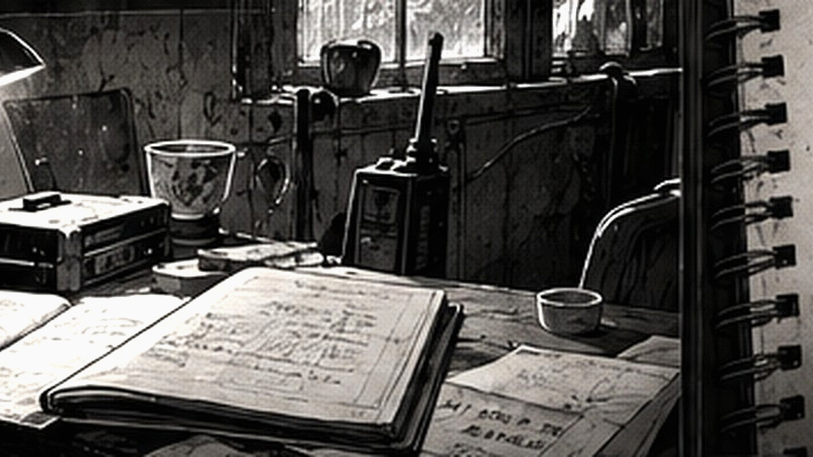
记录柜的锁早被人拆过，里面没有整册档案，只剩牛皮袋、散页和几张完全无关的报销单；林澈把能读的纸按原来的折痕和日期摊开，周野刚伸手想帮，他已经用手背把那只手挡了回去。
周野：“你护这点顺序跟护相机似的。”
林澈：“你每次都从中间抽，我当然得重排。”
沈禾：“你俩先把窗关上。”
三个人留下的交接笔记长度不一样；潘琴的字最急，邹梅的字最慢，何芹中间有两行被水晕开；几张纸都提到“腕带”，但没有一张把事情从头写到尾。
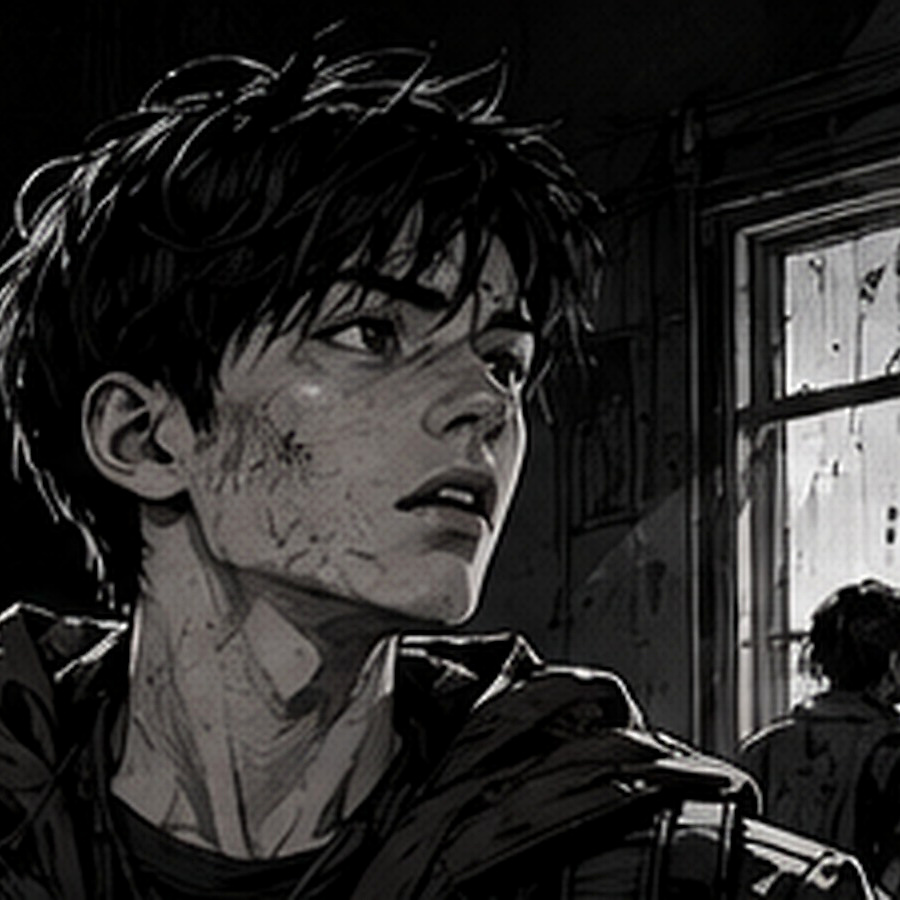
同一个抽屉里还混着米面领用、消毒液补货和两张半年前的请假条；周野念到“牙疼，上午去医院”时笑了一声，林澈没抬头，只沿着原来的折痕把那页塞回去——今晚用不上，却也不该因为用不上就替别人扔掉。
周野：“你连没用的也排？”
林澈：“原来怎么放，就怎么放。”
周野：“那你刚才还拍我手。”
林澈：“因为你会把请假条夹进交接本，还觉得自己帮了大忙。”
牛皮袋最里侧还夹着一张值班时间条，没有叙事，只记谁在什么时段负责哪一层；潘琴从 18:30 起在活动室，邹梅负责洗衣房与后勤库，何芹带低龄组上楼后又返回活动室；三个人的纸，至少在空间上能同时成立。
周野把三张交接并在一起看了一遍，忽然把其中一张倒过来：“这张背面还有半句话。”
背面只剩半句：“……先别让她们回寝室”，前后都被水晕开，既没有主语，也没有留下姓名。
林澈：“先按原样夹回去，别替那半句话补人名。”
一张写“孩子拿错腕带”，另一张写“布签发反”。两句话看起来把责任推向了不同方向。
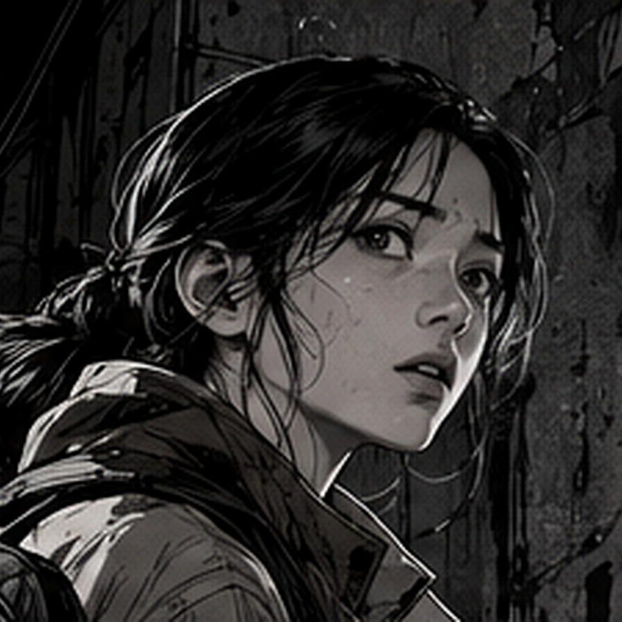
值班室只剩半扇窗还能合上，风一灌进来，桌角那几本儿童生活记录就自己翻页；电话线早被齐根剪掉，白板也拆走了，墙面只留下四颗排列过分整齐的固定螺丝。
林澈把“林小满 / 二层”和“陈雨宁 / 活动室”两条腕带抄记写到纸上，旁边再抄《临时床位调整》：小满在活动室折叠床，豆豆在靠门观察位。
周野：“等会儿——豆豆到底是不是陈雨宁？”
沈禾先把“陈雨宁”当成另一个新入院的孩子，翻到下一页才皱起眉，把自己刚写的那行便签划掉。
沈禾：“……我看错了，登记名陈雨宁，小名豆豆；是同一个人。”
桌上另一张分组便条写着：换衣后，低龄组先留活动室；需要重核的孩子不要回寝室拿东西；字旁边用铅笔画了两个空圈，没有填姓名。
林澈：“那两条腕带上的名字没换，人待的地方却对不上。”
周野：“所以不是把人叫错了，是把她们当晚待的地方写反了？”
沈禾：“把临调页拿过来，我刚才那句先划掉。”
窗台上有一只裂口搪瓷杯，杯底写着“值夜”；里面塞着四支早就干掉的圆珠笔；林澈试了一支，笔尖只划出一道浅痕。
周野拿走那支划不出字的笔，在掌心转了两圈，最后还是插回杯里；沈禾看见了，没说他。
洗衣房的排水沟早堵死，地面却比别处干得反常；最里面挂着一件灰旧外套，布硬得像晒透的纸，工作台抽屉里则躺着半卷暗红棉线，颜色与服装室搪瓷盘里那截几乎一样。
周野：“红线、剪刀、名字……那帖子要是拍到这张桌，估计能再写两千字。”
沈禾：“它要是肯把领用簿一起拍进去，倒不至于传成现在这样。”
桌角压着两条临时腕带的抄记；不是实物，只有后勤人员把上面的字重新抄在纸上：姓名、临时地点、缝制时间。
两条腕带抄记并排摊在桌上，纸张比原来的布带保存得好；能确定的只有姓名、临时地点和缝制时间，针线本身没有留下任何“仪式”意味。
针线盒里有白线、黑线和半卷暗红线；红线最粗，缝厚布省事；邹梅后来在补记里写，她当晚手泡得发僵，针脚“难看得很”。
沈禾：“所谓‘红线缝手’，多半是有人看见腕带和针线，自己把中间那截故事补上了。”
周野：“大概？”
沈禾：“我只说多半——那晚到底谁先拿的针，纸上没写。”
那件灰外套的口袋里什么都没有；拉链坏了一半，袖口有一处补丁；周野说可以扔，林澈说先别动；两个人谁也没解释为什么。
针线柜最底层还有一张“返工”便条：两条腕带拆线后，旧线不要再用，重新缝；旁边写了一个极小的“乔”；沈禾没有把这个字当作姓名，只在登记里写“疑似经手人简称”。
周野：“你们两个今晚谁都不肯替别人把话说完。”
林澈：“这句可以写你自己的本，别写进我那份清点。”
这次沈禾没接话，只把两条腕带抄记往临调页旁边推了半寸。
剪刀放在针线盒旁边，线头结得很粗。桌板上没有别的特殊痕迹。
交接里写着：“18:56，二名儿童暂留换衣桌，重新核对。”没有写名字。
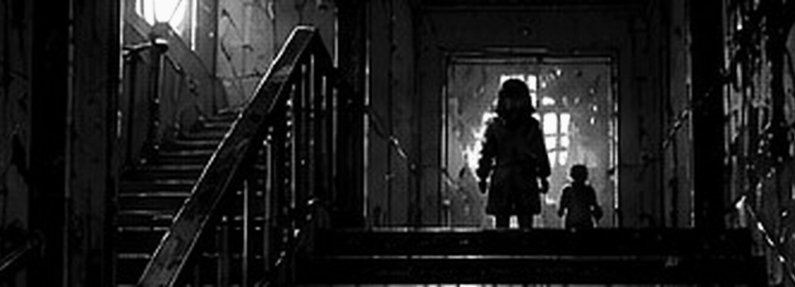
南楼梯如今被木板封住——板子是拆除准备时后来钉的，旁边那条裂缝却老得多，从二层一路爬到半层平台。
林澈把几张通行记录按时间排开；门厅水位简记写到 19:12；南楼梯维修页在 19:16 盖了“停用”；后门钥匙却在 19:18 被借出。
周野把三张时间纸并到一起，手指在19:16和19:18之间来回点了两次：“楼梯停了两分钟以后，后门钥匙才被拿走。”
林澈：“对，往后看——别急着替他们选方向。”
平台上倒着一辆旧拖把车，轮子早锈死了；十九年前的后勤通行说明特地写着“坡道可过送衣推车”；单看不重要，跟门厅水位、楼梯停用时间放在一起，能走的方向一下少了大半。
林澈：“门厅的水还在涨，南楼梯又停了；十九点十六以后，哪一条还能让孩子和推车一起过？”
沈禾：“钥匙十九点十八才借走，把这一张也压进来。”
周野伸手试了试封板，木头只动了半厘米，他便把手收回来，没有继续逞强。
周野：“别担心，我今天不负责制造新的事故记录。”
半层平台原先贴过疏散图，如今只剩一圈发黄胶痕。周野把手机举到一半，又垂下来：“一块空墙也拍？”林澈已经按了快门：“回去不一定记得它空在哪儿。”
后勤补页还提到一件小事：19:22 以后送衣推车先推到坡道外，免得孩子经过时绊脚；邹梅在句尾写了两个字——“太滑”。
沈禾：“‘太滑’这两个字别漏，它说明推车真的走过那边。”
周野：“这回总算有一条不用猜人名的。”
后门平时不上主钥匙板，钥匙单独挂在洗衣房。事故当晚 19:18 有借出记录。
记录柜最底层压着一只薄牛皮袋，封口已经失去黏性；里面只有四页纸，最上面是排版整齐的正式报告，后面三张全是手写，而且日期都比事故当晚晚。林澈把它们摊开时，四张纸的干湿程度甚至不一样。
正式报告只有一句和腕带有关：“转移前完成二次核对，登记无误。”
潘琴的补记多了一行：“两条腕带曾发反，乔乔先提出；”邹梅写得更直接：“我把湿布签一起放盘里，潘琴拿时认错了两块。”
林澈：“正式报告只剩‘二次核对无误’，前面那次写反没进去。”
沈禾把补记和正式页压在一起比日期：“这张晚三天，这张又晚半天……不是一口气写完的，装订顺序也在后面。”
林澈：“可前面那些时间，能跟当晚交接接上。”
沈禾没有立刻接话，只把页角翻到日期那面，指腹沿着装订孔慢慢压过去。
林澈把正式报告放到最左边，又把两张补记推到右边；他想说“可报告就是没写”，话到一半停了；沈禾已经在收旁边的塑料夹。
林澈：“正页先打印，补记才进袋……难怪读起来像少了一截。”
沈禾：“日期就在这里。”
林澈：“要是只看正式页，谁会知道中间写反过两条腕带？”
沈禾：“嗯。流转条到‘归档’就断了，后头没字。”
周野朝门外看了一眼，雨还没停；他没接这句话，只把手机亮给两个人看。他把手机亮给两个人看：物业刚问他们还要多久。
牛皮袋封底还有一张装订流转条：事故报告第二天上午开始汇总，第三天下午打印，手写补记并没有全部并入正文；纸上没有“删去”或者“隐瞒”一类字眼，只有“正文已定，补页归档”。
林澈：“日期能排上。”
沈禾：“能排上不等于知道原因；流转条只到‘正文已定’，后面为什么没并进去，没人留下说明。”
周野：“你们俩今晚比档案柜还难撬。”
沈禾：“挺好用的。”
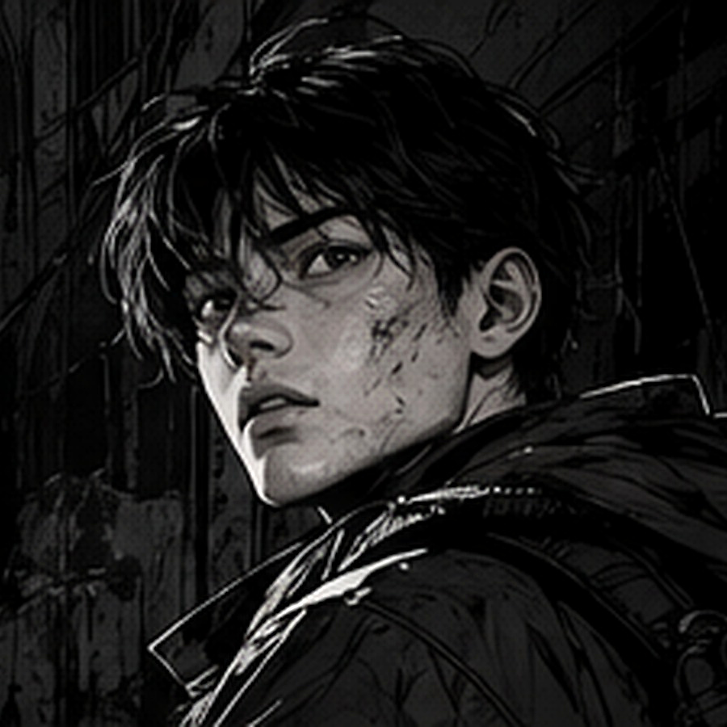
物业的消息在桌边亮了一下：外门还有二十分钟。周野把空箱子踩平，纸板“咔”地折了一声；沈禾已经装好最后一摞纸。林澈的手停在下一只牛皮袋上，停了两秒，还是收回来。
沈禾：“先停一下，柜子再往下翻，也未必还能接到这一晚。”
林澈：“我知道，这张是接收页，得再写一次。”
周野：“你每次说‘知道’，通常还要多拖五分钟。”
桌上只剩已经读过的材料，再没有新东西可翻；林澈把便签摊开，重新按四个阶段分到桌面四角。
沈禾把乔乔那张领鞋带的条子从主线材料里抽出去。
林澈：“那个也有日期。”
沈禾：“这张只是领鞋带，放生活杂项。”
周野：“可算有人治你了。”
林澈这回没有争，把那张领鞋带的条子放回“生活杂项”，还顺手把压在下面的便签重新理平。桌面空出一块，剩下的材料反而更容易看清。
周野伸手去拿两张便签，手到一半又停住，等林澈先点头。林澈看见周野停下来的手，没说什么，只把那两张便签往他面前推了一点。
林澈：“这两张你排。别折就行。”
周野：“你确定？”
周野这回没再逗他，低头把纸摊平；林澈原本压在桌角的手也慢慢松开。
林澈：“快点。”
他把“红线”“剪刀”“两名儿童留下”“后门钥匙”分别写在四张小纸上，周野看了一眼：“你要是把它们单独发网上，明天又能多出一版鬼故事。”
林澈：“所以这些东西不能拆开讲。”
沈禾把四张便签翻到背面，没有写结论，只各添一个能把前后记录接起来的词：湿衣、身份、错配、通行；最后一张写完，她才把笔放回林澈手边。
没人再催时间，只有门外的雨声慢下来；四张纸被推到桌中央以后，原先散开的几个阶段第一次像一整晚。
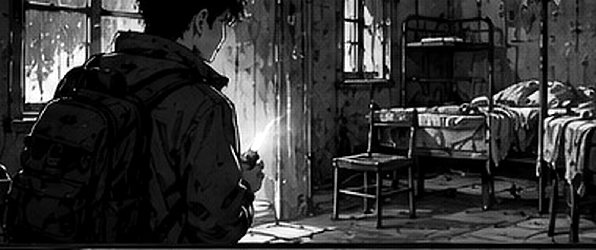
雨水先从一层门缝钻进来，何芹把低龄组往楼上带，潘琴守在楼梯口连数三遍；队伍已经拐过平台，小满还在最后面扭头找鞋，湿袜子踩得台阶一串深印。
潘琴：“鞋先别管，小满，上去——先跟着前面的人！”
小满：“可那双不是我的，我的鞋有一边开线……”
潘琴：“我知道，先上去；等人都到了再给你找。”
库存衣从三楼储物间一摞摞搬下来，码数根本来不及细分；有人抱着衣服往活动室跑，有人蹲在地上拆湿鞋带，房间里几乎没有能空出来的桌面。湿衣被塞进编织袋以后，原本缝在衣服里的姓名布签也跟着离开了人；邹梅索性蹲在袋边，把还能辨认的那几块一一剪下。
邹梅：“干的往左，湿的进袋；别再按衣服认人，已经混了。”
周围有人：“早混了，刚才那袋连楼层都没扎绳。”
邹梅没再争，把还能辨字的布签一块块剪下来放进搪瓷盘；盘底刚擦干又积起薄薄一层水，墨迹沿着布纹慢慢洇开。
阿成：“邹姨，我那条膝盖破的裤子呢？”
邹梅：“哪条？你指给我看。”
阿成：“左边膝盖有洞，补过一次那个。”
邹梅：“那条已经湿透了，今天先穿别人的新裤子——别皱眉，明天再换回来。”
阿成低头捏了捏陌生裤脚，嘴唇动了一下；后面又有人递来一件湿外套，他只好先侧身把路让开。
布签离开湿衣以后，身份只能跟着腕带继续走；桌边的人忙着缝、抄、核对，谁都没把这件事当成值得留下照片的场面。
潘琴把布签分给几个人；小满看见轮到自己，立刻把手藏到背后。
潘琴：“手给我，别往袖子里藏。”
小满：“不要，勒得疼。”
潘琴：“我知道，松一点缝；不舒服你就直接说。”
邹梅：“你别给她许时间，线还在我手里呢。”
潘琴：“所以你先把线给我，别让她等着。”
邹梅低头看见线团还攥在自己掌心，忍不住短促地笑了一声，把线递过去以后才继续分衣服。
18:56，乔乔没跟着其他孩子走，她站在换衣桌边盯着两条腕带看了好一会儿，先看小满，又看豆豆，最后才扯了扯潘琴衣角。
乔乔：“潘老师，这个地方写反了吧？”
潘琴：“哪一条？你慢慢说。”
乔乔把小满的手腕抬高，又指了指豆豆；潘琴皱着眉翻过另一条布带，沉默了两秒才抬眼。
潘琴：“你俩先坐这里，谁都别往寝室跑；何老师，把临调页拿来。”
豆豆：“我的熊还在那边，我去拿一下行不行？”
何芹：“熊也湿了，先别回去。”
豆豆：“那就挂窗边晾一下……”
何芹：“等雨小一点，我去给你看。”
豆豆：“你每次都说等雨停，上次下半天你也这么说。”
潘琴翻了床位临调，又让何芹把照护页拿来；豆豆只认小名，别人突然叫“陈雨宁”，她不抬头；小满倒是把自己的名字说得很快，接着又去扯腕带。
潘琴：“先别扯，再松一点就好。”
小满：“这里勒，转一下也勒。”
潘琴：“行，拆开一点；邹姐，剪这根旧线。”
两条腕带拆线重缝以后，潘琴才在交接纸上补“已核”，顺手又在陈雨宁后面添了括号——豆豆。
豆豆：“为什么这里要写两个名字，我又不是两个人。”
潘琴：“免得别人只看登记名，叫你半天你也不知道是在喊谁。”
豆豆：“我听见了，就是没想理。”
潘琴：“听见了还故意不理？”
豆豆把脸转到一边，何芹憋了半天，还是没忍住笑。
乔乔却没走，坐在桌角盯着潘琴写完，等笔尖离开纸面才开口：
乔乔：“刚才那两条，是你拿反的，对吧？”
潘琴：“对，是我拿反了。”
乔乔：“那你写在纸上了吗？不能只改腕带。”
潘琴把交接纸转了半圈，在“重新核对”后面又添了几个字；乔乔看清以后才从桌边挪开。
19:16，南楼梯下面传来一声闷响；何芹脚下一顿，乔乔从后面拽了她一下。
乔乔：“何老师，下面响了——别往前走！”
何芹回过神，把最前面的两个孩子往回带。门厅积水已经漫过台阶，他们没有再下去。
后门钥匙从洗衣房取出来以后，队伍才穿过晾衣杆之间的窄道往后勤坡道走；门一推开，雨气整片灌进来，最前面的两个孩子同时往后缩了半步。
最前面的人先把送衣推车推到雨棚外，空出墙边一条路；孩子们一人扶一下墙，鞋底沾满洗衣房地砖上的水。
何芹：“别跑！前面一停，后面跟着停；扶墙走，鞋滑的慢一点。”
乔乔：“阿成慢点，他鞋那边又开了。”
阿成：“不是鞋带，是鞋跟；我说了下午就开线。”
乔乔：“都一样，你别踩前面人的脚。”
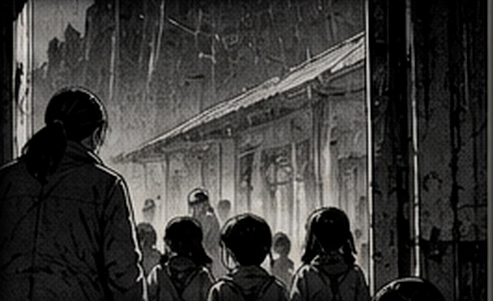
阿成抱着一袋干毛巾，走了十几步就说重；邹梅没接，只让他拖着袋底；小满走到门口又开始扯腕带。
邹梅：“你再扯一次，到了体育馆我还得重新给你缝。”
小满：“可它真的很丑，还扎袖口。”
邹梅：“等你衣服干了再嫌它丑，现在先别掉。”
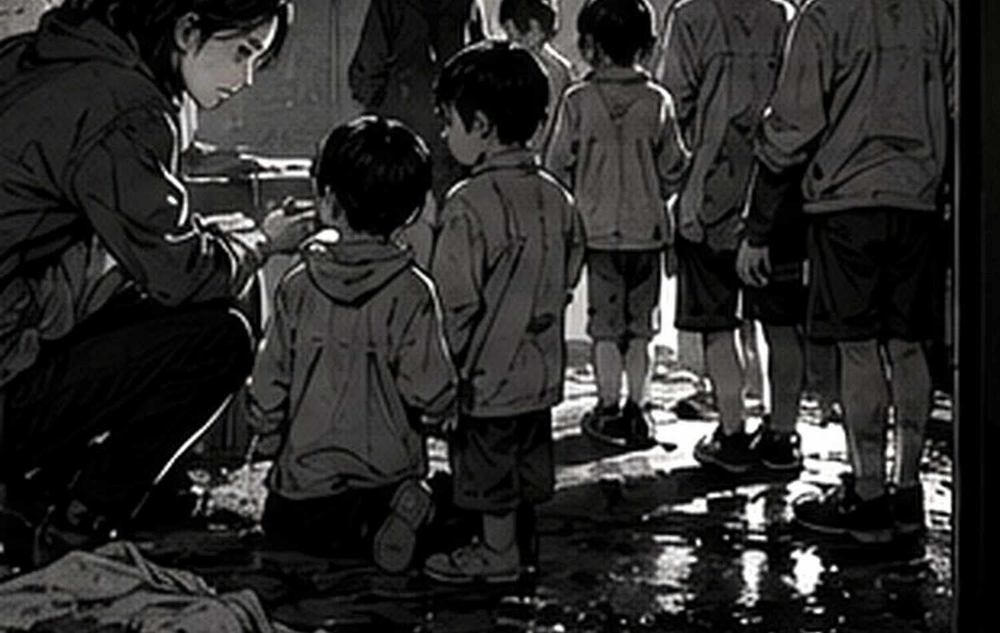
体育馆地板很快被踩得全是湿印，乔乔靠墙坐着，一边鞋带已经松开；潘琴拿着改正后的接收页走过来，蹲下时先替她把鞋带往旁边拨开，免得纸角沾水。
潘琴：“乔乔，到你了——名字再说一遍，我照接收页写。”
乔乔：“刚才不是已经说过了吗？”
潘琴：“我知道，这张是接收页，得再写一次。”
乔乔：“乔乔，乔木的乔，两个一样。”
潘琴低头补了一笔，湿纸把墨晕开一小圈。
乔乔：“潘老师，你那支笔不是一直夹右耳朵上吗？”
潘琴下意识摸了摸右耳，空的——那支笔明明就在她手里。
院门已经退到雨雾后面，三个人都在车旁；没有谁返回楼里，也没有第四个人接近登记夹。
最后一只箱子推回门厅时，雨已经细成一层雾；周野把塑料布塞进后备箱，沈禾蹲在车尾重新核箱号，林澈却没急着上车，钥匙在掌心硌出一道印，他站了几秒才把它重新装回封口袋。
周野：“回去你写哪版？”
林澈：“先按时间排；拿不准的地方就空着，别为了好看硬接。”
周野：“稀奇，你现在居然肯让纸上留空白。”
林澈：“少说一句不会憋死你，先把箱子关上。”
沈禾：“他今晚已经忍得够辛苦了，你别再招他。”
三个人关掉手电，沿来时的坡道往外走；楼里失去光以后，门厅只剩车尾灯扫进来的两道暗红。
外面的雨只剩零星几滴；周野把后备箱关上，又不放心地掀开一次，确认学校那箱没压着待确认材料。屋檐下，林澈把写错的半张便签撕掉，剩下那半重新夹回登记本。
周野：“饭还欠着。”
林澈：“记着呢，回去再算。”
周野：“最好你也写张记录。”
林澈准备把登记夹塞进 C 箱，纸边却挂住了塑料扣；他低头重新理齐，最上面那张《清点登记说明》多了一行蓝黑色的字。
林澈盯的不是时间，是最右边那格：他这一晚写过的每一行都有经手人，这一行空着。
林澈：“这行谁写的？”
周野：“什么？”
周野接过去看了两秒，先摸自己的口袋，又把两只手都摊开。
周野：“我没碰你那支笔……沈禾？”
沈禾：“我一直在车尾核箱号，没碰登记夹。”
就在这时，林澈口袋里的手机亮起——21:17；屏幕冷光照到那行没有经手人的蓝黑字上，墨迹比旁边所有旧字都新。
后备箱盖落到一半，周野的手停在半空；沈禾还捏着箱号清单，纸角被风反复掀起又落下。林澈盯着那格空白很久，拇指已经顶开笔帽，最终却只把登记夹扣紧——经手人那一栏仍旧空着。